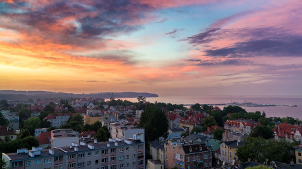
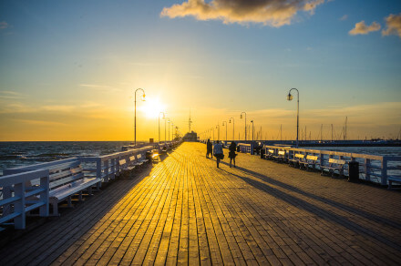
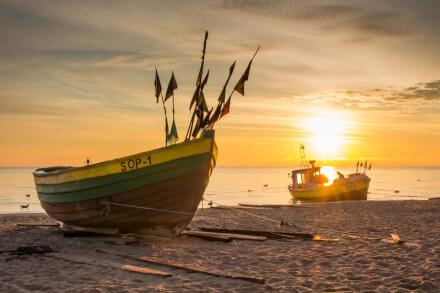
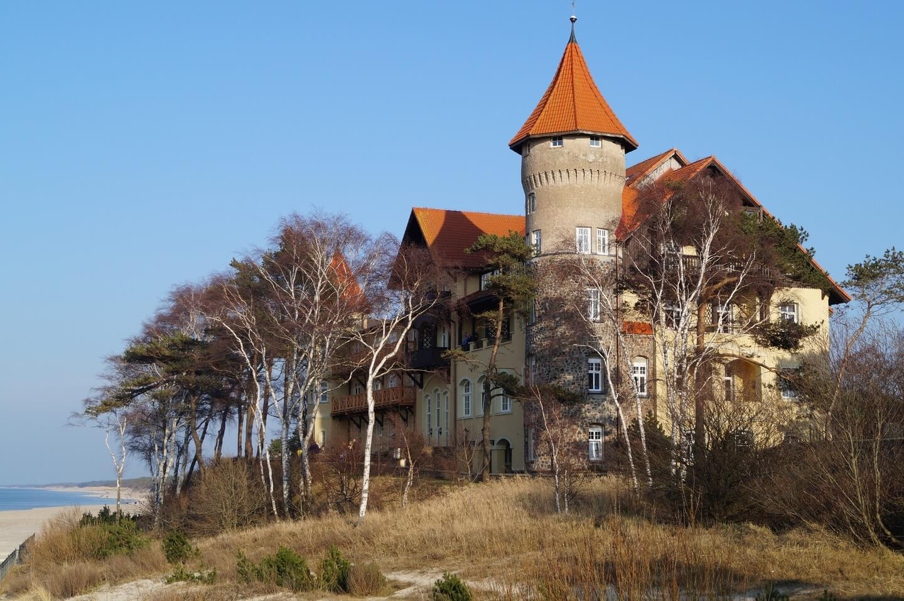
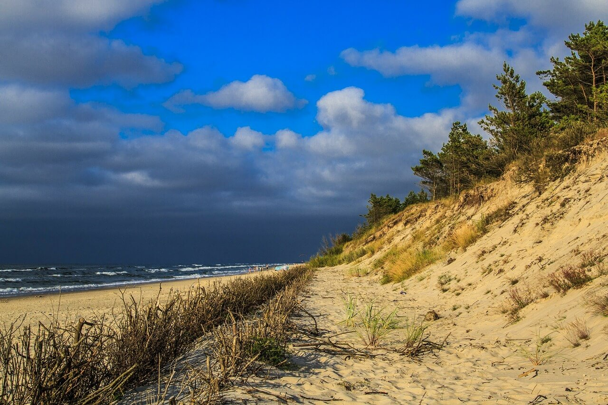
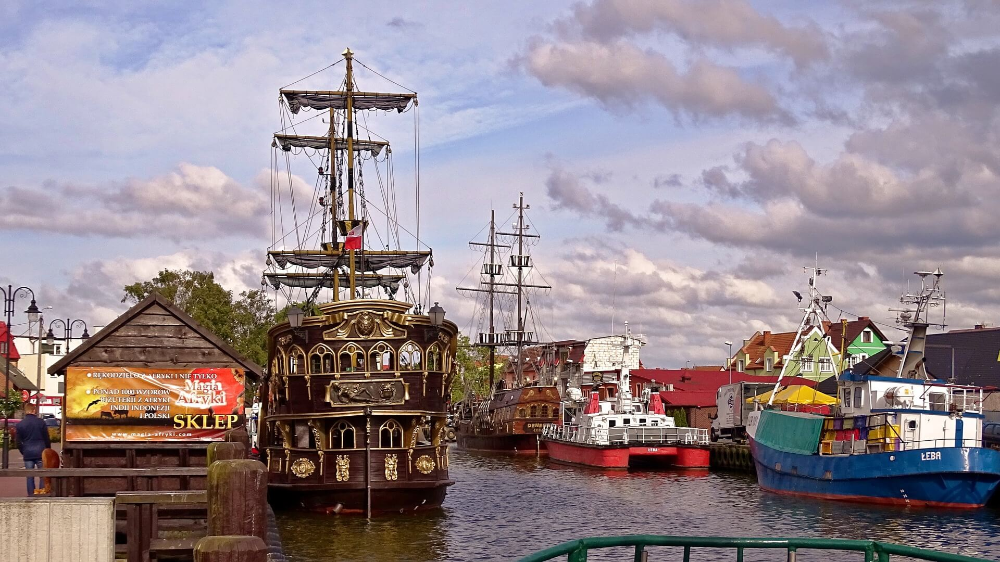
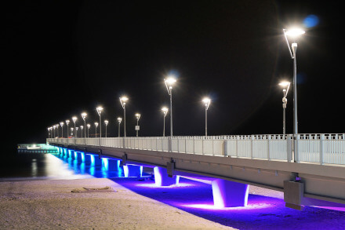
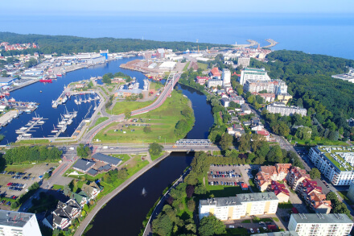
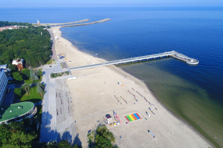

Sopot
Sopot is Poland’s biggest and perhaps most extravagant beach resort with a population of approximately 40,000. It’s sandwiched between two other cities – Gdańsk and Gdynia – which together form Tri-City (Trójmiasto in Polish). Renowned for its wooden pier ( the longest in Europe)which provides amazing views over sandy beaches and the Baltic Sea, it features trendy bars, restaurants, clubs and high-end hotels frequented by affluent Poles, mixed with typical seaside attractions such as waffle shops and souvenir stands. Other highlights include the surrealist Crooked House on Sopot’s main street Monciak, which was inspired by the drawings of Polish book illustrator Jan Marcin Szancer and the annual Open’er music festival, which takes place every July in the nearby Gdynia-Kosakowo airport.
Marta Podeszwa - 14 June 2017
Source



Łeba and Ustka
Łeba and Ustka are coastal towns situated on the two opposite sides of the beautiful Słowiński National Park – famous for its “shifting dunes”, which move due to strong winds creating a desert like landscape. The park was added to the UNESCO list of World Biosphere Reserves in 1977. Łeba features a mix of high-end establishments like the iconic Neptun Hotel, more low-key options including rooms for rent and smaller hotels, while Ustka boasts two beaches (one high-cliffed, one flat) connected by a pedestrianised bridge on the Słupia River, which divides the town in two. It is also home to many cafes and fish restaurants, and an annual firework festival (every July).
Marta Podeszwa - 14 June 2017
Source



Kołobrzeg
The city of Kołobrzeg is known for its historic architecture (such as the 17th century lighthouse and the gothic St. Mary’s Basilica) and spa resorts, which are popular mainly among Polish and German tourists. Life centres around its port, concrete pier and a promenade filled with ice cream shops, beer gardens and souvenir stands. If you’re staying here for a couple of days, make sure you take the ferry to Bornholm Island, which belongs to Denmark and is a great cycling spot. To get away from the crowds, take a long walk on the beach, or head to nearby Grzybowo village.
Marta Podeszwa - 14 June 2017
Source


